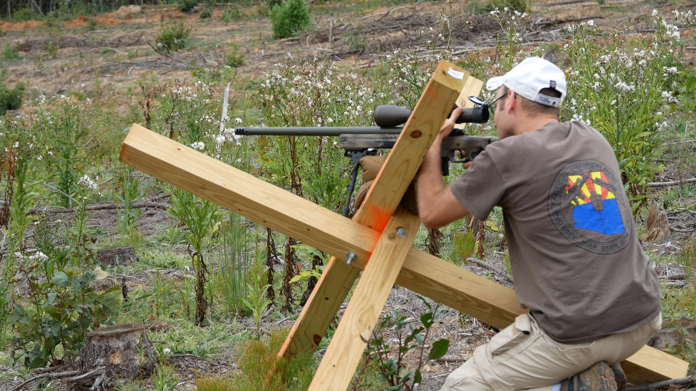
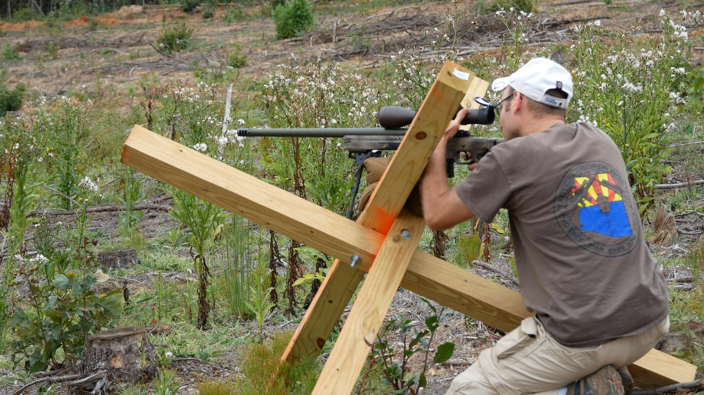

Matches
We intend to hold monthly club matches, promote the sport, encourage responsible firearms ownership, and help new shooters get started. We are a member of the PRS Club Series, match results are submitted to PRS and count towards the yearly standings. Don't worry if you are registered in a different region, shooting at VPRC in Virginia will count towards your points in your own region.
Each match usually consists of 6 stages with target ranges varying from 200-1200 yards. Each stage will have a par time of 90 seconds, and 6-10 rounds maximum fired per stage. Stages are a mix of prone and positional shooting using barricades, tripods, tank traps and other props. The shooter will be required to either transition between multiple targets, multiple positions, or both on each stage. Maximum round count is 50, but it is always a good idea to bring 10 or more extra rounds.
If you would like to see examples of past stages, check out the gallery for photos and videos of previous matches.